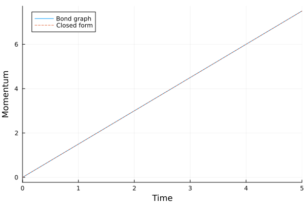
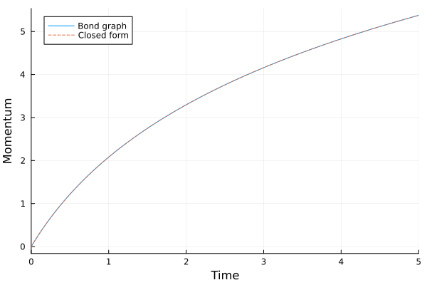

Transformers and Gyrators
The source files for all examples can be found in /examples.
A transformer (TF) and a gyrator (GY) are two-port elements that conserve power (Karnopp, Margolis & Rosenberg, §3.2). Their port p1 is the bond into the element and p2 the bond out of it:
- TF with modulus
m:e₁ = m e₂,f₂ = m f₁(a lever, a gear pair, a hydraulic ram); - GY with modulus
r:e₁ = r f₂,e₂ = r f₁(a DC motor, a voice coil).
Here a constant force drives a mass through a lever, first with a fixed ratio, then with a ratio that changes in time, and finally with a transformer written by hand. Each run is checked against the closed-form momentum of the mass.
using BondGraphToolkit
using BondGraphToolkit.ModelingToolkit: t_nounits as t
using OrdinaryDiffEqTsit5
using PlotsA lever: constant transformer
The bond graph is Se ⇀ TF ⇀ I, and each bond is a connect from an outgoing port to an incoming one. The source's bond leaves it through its outgoing port pout and enters the lever's port 1; the lever's port 2 bonds into the mass's incoming port power.
function lever(tf)
@named F = Se(3.0)
@named mass = Inertia(I = 1.0)
System([connect(F.pout, tf.p1), connect(tf.p2, mass.power)], t;
name = :model, systems = [F, tf, mass])
end
@named tf = TF(m = 2.0)
model = lever(tf)
sol = solve(ODEProblem(mtkcompile(model), [], (0.0, 5.0)), Tsit5(), reltol = 1e-10, abstol = 1e-10)retcode: Success
Interpolation: specialized 4th order "free" interpolation
t: 8-element Vector{Float64}:
0.0
9.999999999999999e-5
0.0013549217660412036
0.012409444224738327
0.08438261832763043
0.44998948132333666
2.013724647098291
5.0
u: 8-element Vector{Vector{Float64}}:
[0.0]
[0.00014999999999999996]
[0.002032382649061805]
[0.01861416633710749]
[0.1265739274914456]
[0.6749842219850049]
[3.0205869706474355]
[7.499999999999999]By hand: the source sets the effort on its bond, which is port 1's, so e₁ = F = 3. The transformer gives e₂ = e₁ / m = 1.5, and the mass integrates its effort, ṗ = e₂, so from rest p = 1.5 t.
plot(sol, idxs = [model.mass.p], label = "Bond graph", xlabel = "Time", ylabel = "Momentum")
plot!(τ -> 1.5τ, 0, 5, label = "Closed form", linestyle = :dash)
The largest difference on a common time grid:
tgrid = 0:0.01:5
maximum(abs, sol(tgrid; idxs = model.mass.p).u - 1.5tgrid)3.6415315207705135e-14Modulated transformer
Passing an expression as the modulus gives a modulated transformer (MTF). Here the lever ratio grows in time, m = 1 + t, so the force on the mass decays, ṗ = e₂ = 3 / (1 + t), and from rest p = 3 ln(1 + t).
@named tf = TF(m = 1 + t)
model = lever(tf)
sol = solve(ODEProblem(mtkcompile(model), [], (0.0, 5.0)), Tsit5(), reltol = 1e-10, abstol = 1e-10)
plot(sol, idxs = [model.mass.p], label = "Bond graph", xlabel = "Time", ylabel = "Momentum")
plot!(τ -> 3log(1 + τ), 0, 5, label = "Closed form", linestyle = :dash)
Its largest difference from the closed form:
maximum(abs, sol(tgrid; idxs = model.mass.p).u - 3log.(1 .+ tgrid))2.518847352916964e-10The modulus can also read the model's own variables, as in the DC motor example. Build such a two-port with @named: it scopes the other subsystems' variables to the parent model.
A custom two-port
@twoport defines a new two-port element. It adds the ports p1 (bond in) and p2 (bond out) and gives you the bonds' own variables e1, f1, e2, f2, each flow positive along its half-arrow, so the law is written as in the book. This transformer is the same as the built-in TF:
@twoport function MyTF(; name, m)
@parameters m = m
[e1 ~ m * e2, f2 ~ m * f1]
end
@named tf = MyTF(m = 2.0)
model = lever(tf)
sol = solve(ODEProblem(mtkcompile(model), [], (0.0, 5.0)), Tsit5(), reltol = 1e-10, abstol = 1e-10)retcode: Success
Interpolation: specialized 4th order "free" interpolation
t: 8-element Vector{Float64}:
0.0
9.999999999999999e-5
0.0013549217660412036
0.012409444224738327
0.08438261832763043
0.44998948132333666
2.013724647098291
5.0
u: 8-element Vector{Vector{Float64}}:
[0.0]
[0.00014999999999999996]
[0.002032382649061805]
[0.01861416633710749]
[0.1265739274914456]
[0.6749842219850049]
[3.0205869706474355]
[7.499999999999999]It gives the same p = 1.5 t as the built-in TF:
plot(sol, idxs = [model.mass.p], label = "Bond graph", xlabel = "Time", ylabel = "Momentum")
plot!(τ -> 1.5τ, 0, 5, label = "Closed form", linestyle = :dash)Its largest difference from the closed form:
maximum(abs, sol(tgrid; idxs = model.mass.p).u - 1.5tgrid)3.6415315207705135e-14This page was generated using Literate.jl.